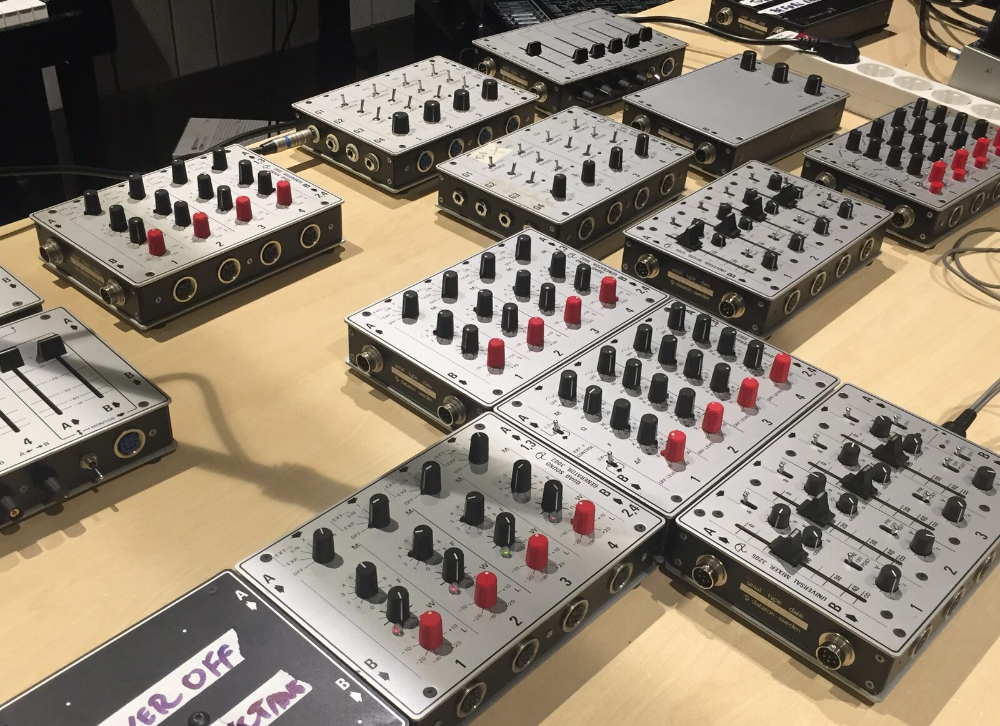
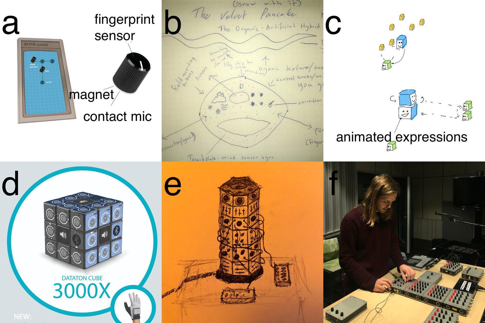
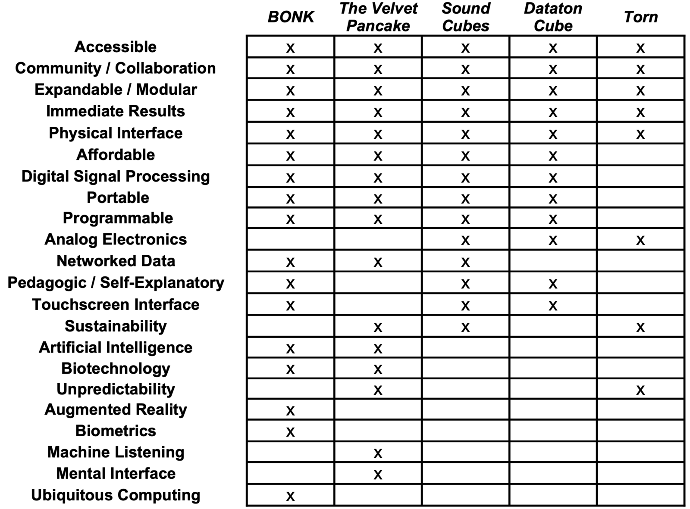

Sounds of Futures Passed: Media Archaeology and Design Fiction as NIME Methodologies
Abstract
This paper provides a study of a workshop which invited composers, musicians, and sound designers to explore instruments from the history of electronic sound in Sweden. The workshop participants applied media archaeology methods towards analyzing one particular instrument from the past, the Dataton System 3000. They then applied design fiction methods towards imagining several speculative instruments of the future. Each stage of the workshop revealed very specific utopian ideas surrounding the design of sound instruments. After introducing the background and methods of the workshop, the authors present an overview and thematic analysis of the workshop's outcomes. The paper concludes with some reflections on the use of this method-in-progress for investigating the ethics and affordances of historical electronic sound instruments. It also suggests the significance of ethics and affordances for the design of contemporary instruments.
Author Keywords
Workshop, Media Archaeology, Design Fiction
CCS Concepts
•Applied computing → Sound and music computing; •Human-centered computing → Interaction design theory, concepts and paradigms;
Introduction
The subject of this study, the "Sounds of Futures Passed" workshop, took place within the context of ongoing research into historically-informed sound synthesis. The overall project is based on a collection of electronic instruments [1] used by composers in Sweden during the 1960's and 70's collected by the Swedish Performing Arts Agency (Musikverket) and archived by the Performing Arts Museum (Scenkonstmuseet). As the first experiment of our project, this workshop was an opportunity to explore different methodologies alongside one particular artifact, the Dataton System 3000. In combining a workshop approach with the prompt of a historical sound device, we ask how such devices can be used to inspire new contemporary instruments. We further wish to investigate what can be learned through a dialog between the historic and the contemporary. Our interest lies in the social dimensions of instrument creation and use, rather than simply the material ones. This paper describes a method, inspired by the theoretical discourses and playful "what-if" scenarios of media archaeology and design fiction, which we implemented in our research to examine these social dimensions.
Workshops have consistently been valuable tools for studying the prototyping of New Interfaces for Musical Expression. Example workshops within the NIME community have ranged from exploring the cognitive and material relationships between gesture and sound [2], or the use of hardware and software toolkits to involve children in instrument creation [3], to rapidly prototype deliberately rough and unfinished sound interactions from everyday objects [4] [5]. As seen in the example of Anderson's "Magic Machines" [6], there is an emerging focus on the use of imaginary instruments and non-functioning models within the workshop practice. Such design fictions can inform the design process by freeing us from the engineering constraints of reality [7], or by overcoming "solutionist thinking" which seeks to apply the latest available technology to non-existent problems [8]. Design fiction workshops can also elucidate the cultural and aesthetic values held by members of particular musical communities [9] [10].
While countless NIME projects seek to repurpose or reinterpret classical acoustic instruments, fewer seek an active dialog with the history of electronic sound. However, recent doctoral scholarship on the topic finds compelling media archaeological research being done with the analysis and reimagining of unique historical instruments [11] and the performance of canonical musical works employing "reverse-engineered" interpretations of the original electronics [12]. These projects straddle the border between the worlds of conservation and musicology on the one side, and new artistic creation on the other. Previous NIME contributions have detailed the redesigning of vintage technology as interactive art [13], drawn inspiration from neglected historical computer compositions [14], or re-examined historical experimental music concepts such as the "readymade" [15] as the starting points for contemporary works. Notably, each example focuses on a reenactment of the affordances provided by a historical object, rather than on a perfect reconstruction of its original technical implementation.
Although an organology of the instruments under study would be necessary for a structured approach to our historical research, we felt that a taxonomy based on their functions of sound causation alone would not provide us with the right tools. Recent work on the organology of NIMEs [16][17], as well as on the social contexts of historical electronic sound instruments [18] both draw upon concepts from the discipline of science and technology studies to expand their analysis. As Latour's actor-network theory suggests [19], technological instruments are neither passive, neutral, nor transparent objects. Rather, such objects possess agencies of their own which are strongly shaped by the contexts and ideologies from which they arose, and which go on to shape their subsequent use. And if instruments can be considered active participants in their deployment in society, then it makes sense to discuss their ethics.
Tresch and Dolan [20] propose a new system of analysis which takes ethics as its basis and applies this concept to the agency of nonhuman objects. They suggest that the ethics of an instrument can be discussed according to several categories; the parts necessary to make and differentiate it; the degree to which it's actions are "autonomous or passive, modifying or transparent, hidden or visible"; the rules and obligations to which the instrument relates; and the ends to which the instrument is directed. In the case of sound synthesis technology from a half century ago, these ethical ends were often utopian in their vision of a new musical future.
Because an instrument's affordances are aligned with the user’s experience, and depend on the context in which the instrument is used, they provide a means through which we might consider an instrument's ethics [21]. Looking backwards into time by way of media archaeology, we can trace out the ethics encoded within and affordances provided by technological objects. Leaping forwards in time via design fiction, we may enter into an imaginary realm of limitless possibilities, unbounded by material restrictions. And through the combination of both, we might arrive at design concepts which bring forward the sounds-of-futures-passed with renewed inspiration.
Background
Media Archaeology and Design Fiction
Technological innovations anticipate a better future, but we can only ever imagine the future through the lens of the present. This remains as true for people living decades or centuries ago as for us now, and only through the lens of the present can we look back at them and their creations. Media archaeology is one critical method of doing so. It explores neglected historical themes; alternative historical narratives; obsolete, dead, or "zombie" media; imaginary or non-existent media; unusual applications of archival material; and hidden or buried conditions within media devices themselves [22][23]. In practice, such archaeology often excavates a media artifact from the past and connects it with the present in ways which help us understand our contemporary relationship with technology.
A significant part of media archaeology ends up looking at what we might call the design fictions of past eras, which were imagining their own futures. Consider the artist's rendition of H. Grindell Matthews' "Light-Beam Piano" which appeared on the cover of Science and Invention magazine in 1926 [24](Figure 1). Bearing little resemblance to the actual invention described in the article, this fabulous vision of the future is made up almost entirely of individual parts easily recognisable to an audience of the 1920's. We see the massive body of a grand piano, played by a fashionable young lady, a set of horn speakers clearly evoking the phonograph, a rack of glowing vacuum tubes representing the most current electronics technology, and even a painstakingly depicted mains cable running from piano to wall socket, just in case there was any doubt in the viewer's mind that the whole arrangement is electrified. To this has been added the fantastic: what appears to our modern eyes as a series of laser beams shooting through spinning, fiery discs which (somehow!) produce the sounds coming from the speakers. (See page 896 to find out how!)

Figure 1. The Light-Beam Piano. (Image in public domain.)
Everything this speculative design presents as desirable represents the antithesis of what one expects from consumer technology now. The Light-Beam Piano is heavily immobile, blaringly indiscreet, fully manual, scorching hot, and permanently tethered to a wire. Accordingly, making these comparisons already brings our current techno-aspirations into sharper focus. How will today's Wired and Popular Science magazine covers appear a century from now? Will our current media devices have laid to rest the desires and fears they were engineered to satisfy or overcome? Or, if (inevitably) many of those desires and fears remain, what will have replaced our iPhones, Oculus Quests, and Spotify playlists in order to address them?
Like media archaeology, design fiction [25] uses the familiar to help us imagine the unfamiliar. It often invents technologies which are almost familiar but not quite realized yet, such as the oft-cited human-computer interface depicted in the film Minority Report. It may also depict devices which are so far into the future that we can only envision them through familiar equivalents, such as the tricorders, communicators, and phasers of the original Star Trek series, which were drawn containing the bulky 1960's electronics components more often seen inside consumer television and hi-fi systems of the day [26]. It communicates these imaginary technologies through well-established media genres such as product advertisements, retail catalogs, user manuals, travel guides, and technical diagrams. Critically, the most socially ambitious design fictions use an imagined future to make sense of the present. Projects such as Anderson's "Magic Machines" workshops suggest that innovation for its own sake is absurd and meaningless if we haven't figured out how to solve the problems we currently face with the abundant technologies we already have [27].
The Dataton System 3000
For our ongoing research into historically-informed sound synthesis, we began with the Dataton System 3000. This modular synthesizer and audio mixer was designed by Björn Sandlund in Sweden during the 1970’s as a pedagogical tool. An official government report published in 1977 recommended that every music school in the country be provided with one [28]. Unfortunately, this advice was not followed, and Sandlund's Dataton company instead moved into multimedia presentation technology [29]. As such, the System 3000 represents a particular utopian vision of a future — one in which almost anyone could access the means to make electronic music — which was never reached. Historically, the specific modules available to us have been used for electronic composition courses by KHM Royal Academy of Music, in the private studio of Swedish composer Leo Nilsson, and at the Sibelius Academy in Helsinki.
At our disposal was a working system with over one dozen modules, with which the workshop participants could familiarize themselves. This particular System 3000 contains the following module types:
sound input and generation: Quad Input Amplifier 3001, Quad Sound Generator 3002, Noise Generator 3004
sound processing: Quad Universal Filter 3103, Quad Envelope Shaper 3104, Ringmodulator 3105
mixing, panning, and output: Master Mixer 3201, Sub Mixer 3202
and finally power regulation and distribution: Power Supply 3320
Several of these modules were duplicated in our collection. The Dataton's unique design feature is a clever system of horizontal and vertical busses routed through rugged, interlocking connectors on the four side panels of each module. This allows modules to be laid out like tiles and directly plugged together, with the main stereo bus and control voltages flowing from left to right, four discrete audio channels running from top to bottom, and the supply power available at any connection. Special patch cables can also be used to span longer distances between the connectors.


Figure 2: Dataton System 3000. (Photo by the authors.)
As with the early Buchla and Serge synthesizers, no keyboard controller was provided (although Sandlund did have eventual plans for both touch and breath controllers). The physical interface of the System 3000 - consisting entirely of knobs, faders, switches, and pushbuttons - presents many of the same possibilities and limitations in live performance as other modular instruments of the time. While a digital sequencing module (Polyphonic Computer 3301) was also available, it was considered too complicated for use within the timeframe of this particular workshop. The selected modules were documented through a series of YouTube videos for the participants' reference [30].
Methodology
Workshop Aims
The workshop's aims were as follows:
to investigate the user experiences of an under-researched, historic electronic sound instrument in a contemporary setting
to use what was learned through direct experience with this historic instrument as the starting point for speculative designs of future technology
to use these speculative designs to compare utopian ideas of electronic sound instrument design from the 1970’s with those of the present day
and to experiment with methods of media archaeology and design fiction for use in future workshops on historically-informed sound synthesis.
Participant Profiles
The workshop involved ten participants, who were mainly students describing themselves as composers, performers, audio engineers, sound designers, and music producers. All were in their 20's-30's. Despite efforts to involve more women in the workshop, only one participant was female. Two thirds of the participants mainly worked in software, relying on the computer keyboard, mouse, MIDI keyboard, and other MIDI devices as controllers, as their main sound production environment. The remaining third of them worked primarily with commercially manufactured, hardware-based musical instruments. Most reported feeling reasonably knowledgeable about the history of electronic music and the instruments used to create it. There was a balance between those who created sound in real time performance situations and those who worked largely in non-real time composing and editing situations. About half the participants expressed prior knowledge of basic sound synthesis techniques (AM, FM, additive, subtractive, etc) and claimed some experience with patchable, modular-type environments.
Workshop Methods
During the first phase of the workshop, participants were provided with a series of video tutorials and historical manuals explaining the basic functions of the Dataton System 3000. They were then introduced to the themes of the workshop and to the practice of media archaeology. Following this, participants worked in small teams of two or three over a week’s time to create basic sound compositions demonstrating the capabilities of the Dataton system. The only guidance for these compositions was that, while they could use basic digital editing techniques, they should avoid extensive post-processing so that the original source material remained recognizable as such. These compositions were shared and collectively discussed during the second session. During this discussion, participants were asked to comment on the aspects of the Dataton which assisted or hindered the process, as well as speculate on what the intended uses of the Dataton may have been.
The second phase of the workshop began with an introduction to the practice of design fiction, along with numerous examples of speculative design projects in various media (television, film, print, etc). We also looked at user’s manuals and promotional literature from other historic and contemporary synthesizer manufacturers as templates of how one might describe an electronic music instrument to its potential users. The task for each group during the subsequent week was to design a speculative sound instrument of the future, based on their experiences with the Dataton, and responding to the strengths and weaknesses of the system as previously discussed. Again, few limitations were applied to the process, and technical feasibility in particular was excluded from consideration.
During the third and final workshop phase, the participants presented their designs in the form of drawn or collaged images and short written descriptions, supported by a verbal walkthrough of the instrument's attributes. The entire group then discussed the features and themes of the designs, with particular attention paid to who the intended user of the instrument might be, and to what ends they might use it.
Data Gathering and Analysis
Besides presenting a sound composition and speculative instrument design, participants were asked to fill out three surveys. The first covered their backgrounds and experiences, the second asked them to reflect on the process of using the Dataton System 3000, and the third asked them to describe specific aspects of their design proposals. The general workshop meetings were recorded and transcribed. Following the workshop sessions, the authors performed thematic analyses [31] on the discussions around both sets of outcomes — the sound compositions and the speculative instruments — assisted by the recordings and survey responses. Through analytic coding of the surveys and transcripts, we sought to isolate larger themes within both the user experience of the Dataton and the features proposed in the design fictions, which we felt reflected utopian technological ideals.
Workshop Results
Presentation of Compositions
The media archaeological explorations of the Dataton System 3000 during the first workshop week resulted in five compositions, which were presented at the second general meeting. Three of the compositions were created by individual participants, while two compositions were created by groups of three participants. The first group's piece was composed by editing together single takes of different patches, passing the material from one participant to another through networked collaboration. The second group's piece was more of a collective improvisation, with two participants interacting with different parts of the patch while the third handled mixing the results and conducting the actions of the other two. Many sounds used in the pieces arose from the ease of creating chaotic feedback patches between the voltage controlled oscillators of the system. Two compositions in particular employed vocal or piano sounds as control signals within the Dataton. Generally, each work involved the use of a fairly limited number of sonic "characters" based on specific patches. These characters were typically steady, singular rhythmic elements alongside "organic" or "noisy" sounds, drones, and "watery" sounds from the resonant voltage controlled filters. Selections from the participants’ compositions are included in the previously mentioned YouTube playlist, and have also been archived by KTH [32].
User Experiences with the Dataton
While aesthetic commentary on the compositions themselves was a part of the discussion, the focus of our meeting was on the participants' user experiences with the instrument. The consensus of the groups was that the Dataton was a “fun” and “exciting” tool with which to experiment and discover new sounds, but that the instrument was sometimes “clumsy” and often “unpredictable”. This term was used in both a negative and a positive context, however, indicating that "happy accidents" were in fact welcome and inspiring at times. Participants often reported that the controls were incredibly sensitive and could respond to the smallest adjustments with radical changes in the overall sound, but that they could not understand why certain sounds happened, particularly in more complex patches. One participant summarized the Dataton as both "intuitive but counterintuitive".
Despite this apparent complexity, many also said that they found the architecture of the instrument limiting, and wished for more flexible routing methods. Several participants felt that they were being directed by the possibilities of the machine rather than the instrument expressing the user's musical ideas. They noted that the omission of keyboard or sequencer in favor of more direct interaction with the modules made the production of melodic, harmonic, or rhythmic progressions quite difficult. Many participants expressed a wish that the system's interface were more self-explanatory, even though printed manuals had been provided alongside the instrument. Participants speculated that the Dataton was intended as a radical departure from previous music making tools, and ideal for students and young people since it was immediate, accessible, portable, and hands-on. However, they also noted that it might not have been meant as an instrument for serious musical composition.
Presentation of Instrument Designs
At the end of the second week, the participants presented five speculative design fiction instruments. Each group responded to elements of the Dataton System 3000 which they found either inspiring or frustrating during the previous week, and combined those elements with existent or imaginary technologies in ways which illuminated their own utopian ideas for music instruments of the future. Negative influences included the Dataton's complexity, "clumsy" interface, and limited routing. Positive influences included its unique, tiled method of module connectivity, its accessible and pedagogic nature, and the immediacy and spontaneity of its physical controls. Contemporary points of reference included Korg's littleBits synthesizer [33], the Monogram Creative Console [34], and the ReacTable interface [35]. Well-known children's toys such as Lego blocks and the Rubik's Cube also inspired their designs. The five projects are summarized in the following sections.


Figure 3: Details from project designs and instrument exploration. (Images by the workshop participants.)
BONK
The first instrument (Figure 3a), whose name is derived from the ananym of “knob”, uses ubiquitous computing and augmented reality technologies combined with a single physical interface. This knob allows the user to play a programmable software synthesizer mapped onto any surface. Biometric sensors identify both the user and the finger they are using, allowing access to patches created by themselves and other users in the community as well as defined, finger-specific parameters. An artificial intelligence tutor guides new users through using the system, while bio-chip implants allow them to hear the sounds they create directly in their eardrums.
The Velvet Pancake
Users share this endlessly-reproducible "organic hybrid synth" (Figure 3b) by breaking off a piece from an already-existing instrument, embedding a special 10G chip in that piece, and then growing a new Velvet Pancake for themselves. The instrument is played via a central touchplate, buttons which provide access to AI-sorted field recordings captured via a global network of mobile phones, and direct mind control. While the instrument strives to express the player's sonic ideas as accurately as possible, the design also includes a switch to disable this "quantization" and allow random surprises to occur.
Sound Cubes
Sound Cubes (Figure 3c) represent a physical patching system of small blocks laid out in space and communicating wirelessly. Each cube has a specific, programmable function as either a sound generator, control signal, or audio output via a transducer speaker. The proximity of a control cube to a sound generator intensifies its effect, the facing direction of a control cube determines which sound generator it might affect, and feedback loops could be created through clever arrangement of generator and control cubes. The cubes themselves utilize very cheap technology, and can be 3D printed from household plastic waste.
Dataton Cube
Based on a very popular toy from the 1980's, this portable and self-contained design (Figure 3d) takes the form of a cube made up of smaller cubic modules. Each module has a small touchscreen, runs a configurable DSP algorithm, and has a signal routing based on the orientations of its four edges. Routing is changed by twisting the rows and columns of the cube until the modules line up in the desired order. Its scalable complexity makes it equally suitable for both children and performing musicians.
Torn ("Tower")
A hexagonal tower of analog synthesizer modules (Figure 3e) — directly inspired by the form factor of the Dataton (Figure 3f) — encourages a collaborative approach to music making. Players on each side of the tower pass the ends of patch cables to other players, who may not know what sort of signal or audio might be sent to them. This unpredictability lends game-like qualities to social interaction.
Instrument Design Analysis
A graph of the various technologies and affordances proposed by these speculative instruments, which emerged from our thematic analysis, is depicted in Figure 4. Aspects of the Dataton can be found in multiple areas. The rectangular, interconnecting, modular form factor of the Dataton was clearly reinterpreted in imaginative ways, as were the direct, hands-on user interface elements of knobs, buttons, and sliders. Overwhelmingly, the participants envisioned instruments which were portable, immediately ready to produce sound, scalable and extensible in their level of complexity to accommodate both beginners and more advanced users, and which provided physical control over programmable DSP. Every one of the designs the participants presented involved an element of collaboration or community. This aspect reflected the participants’ own experiences of either physically interacting with the instrument at the same time, or sharing data and sound materials through some form of networking. The pedagogic aims of the Dataton were echoed by a few of the designs, however the availability of electronic sound instruments to anyone became a priority for all the speculations.


Figure 4: Speculative instrument technologies and affordances.
Other formal influences also manifested themselves in the designs. For instance, contemporary user experience design strategies were evident in the rejection of external written documentation in favor of "intuitive" and self-explanatory interfaces. Quite curiously, while a few projects mentioned the emulation of analog waveforms or the use of field recordings, none of the participants would venture to describe how their instrument actually sounded. Instead, they universally emphasized that the instruments could sound like almost anything, and that the users should have unlimited freedom in deciding how exactly. While not inherently contradictory, some of these design goals present formidable challenges to realization. For example, how can an instrument allow anyone to make music the instant they pick it up, yet also provide limitless possibilities and an absence of constraints? This issue is easily avoidable when creating non-functional prototypes on paper, but any subsequent design phases would be forced to address it.
Discussion
While an instrument based on telepathic mind control may remain an entertaining suggestion within the foreseeable future, the utopia expressed by that particular affordance is a recurring theme in the history of electronic music instruments. For example, Daphne Oram designed her Oramics system out of a keen desire to express the sounds she heard in her head as clearly as possible, without translation through either a symbolic musical notation or other performers [36]. In the 1970’s, Laurie Spiegel sought another kind of utopia:
Technology is a tremendous liberator. It blows up power structures. Women were naturally drawn to electronic music. You didn't have to be accepted by any of the male-dominated resources. You could make something with electronics, and you can present music directly to your audience. And that gives you tremendous freedom. [37]
The idea that anyone could grow their own synthesizer, play one on the wall, or spread one out like a pile of Lego bricks across the floor, all spring from the same vision of unmediated accessibility which Spiegel feels could be realized in electronic music.
Utopias are not defined merely by their technologies. They are also defined by their ethics, in the sense of a given technology's aims as described by Tresch and Dolan. Flying cars and teleportation beams exist in imaginary utopias not only for their own sake, but as what Bleecker calls "diegetic prototypes" to tell stories about how they might affect the quality of life. The ethical positions discussed in this workshop harmonize well with those espoused by the NIME community [38]. Participants were largely concerned with instruments which made sound creation affordable or otherwise materially accessible to many different types of users (although differences of ability were not explicitly addressed); were ecologically sustainable; promoted community involvement and shared resources; addressed the social isolation of what one participant labelled the "lonely synthesists"; and protected data privacy even when trending-yet-problematic technologies such as biometrics, machine listening, artificial intelligence, augmented reality, and data clouds were involved.
Some of these very contemporary concerns cannot be directly linked to the Dataton of the 1970's. However many of its affordances and aims are strongly reflected by the workshop designs. The Dataton is immediate and responsive, scalable and flexible, highly portable, and at one time was intended to be accessible by any Swedish music student. But it is also limited by its own architecture, unpredictable, overly-complex, and perhaps even “un-musical” according to some users. Each of these aspects became a positive or negative influence on the workshop designs. Yet clearly, many of the Dataton's aspirations regarding the future of sound then remain a part of the participants' utopian ideals now.
Conclusions
In this paper, we have described the beginnings of a methodology for the design of new sound instruments. This methodology involves an examination of the ethics and affordances of electronic devices from the musical past, coupled with speculation about how these ethics and affordances might be realized in a technologically distant future. The methodology is applied to examples from the legacy of electronic music in Sweden. This method’s long term goal is to synthesize the observations gained through its use into new, historically-informed electronic sound instruments. We hypothesize that reenactments of the ethics and affordances of historical instruments, rather than period-correct reconstructions of their technical implementations, will be far more relevant to composers of the present day.
To test and expand this methodology, we plan future workshops involving different instruments and participant groups. We recognize that, while our initial survey was stimulating, it was also limited in its scope and only reflected the imaginations of a very specific participant profile. We anticipate that targeted outreach during the selection of future workshop participants, particularly in terms of gender and age, will result in far more widely representative data.
After the Dataton, two instruments created in 1968 stand out as promising candidates for further examination: the Andromatic [39] polyphonic synthesizer built by Erkki Kurenniemi for the composer Ralph Lundsten, and the handheld Ljuddar [40] sound generators used by Lundsten and Nilsson in workshops and concerts throughout Sweden. Like many of the historical devices under study, these are rare or unique specimens archived under museum conditions which render them inaccessible and unplayable. This makes the examination and reenactment of the possibilities which they offer — and of the visions they aspired towards — crucial for maintaining their presence in the contemporary music world.
7. Acknowledgements
With thanks to Björn Sandlund, Daniel Araya, Sandra Pauletto, Mischa van Kan, and the workshop participants Erik, Giovanni, Jacob, Joel, Johannes, Linus, Marcel, Ola, Todd, and Tove. This research took place through a collaboration between KTH Royal Institute of Technology, KMH Royal College of Music, the Swedish Performing Arts Agency (Musikverket), and EMS Elektronmusikstudion, with support from the Swedish Research Council (2019-03694).
8. Compliance with Ethical Standards
All workshop participants were informed and consent was obtained regarding the nature of the research, the activities involved, the data collected, and their rights regarding the use of that data. All general meetings of the workshop were held as video conferences to reduce the risk of COVID-19 transmission during the global pandemic.
Citations
Music Instrument Museums Online. Scenkonstmuseet synthesizers, n.d. https://mimo-international.com/MIMO/search.aspx?SC=DEFAULT&QUERY=scenkonstmuseet+synthesizers
↩Tomás, E., T. Gorbach, H. Tellioglu, and M. Kaltenbrunner. “Material embodiments of electroacoustic music: An experimental workshop study”. In Proc. NIME, Porto Alegre, Brazil, 2019.
↩Trappe, C. “Making Sound Synthesis Accessible to Children”. In Proc. NIME, University of Michigan, Ann Arbor, 2012.
↩Armitage, J. and A. McPherson. “Crafting Digital Musical Instruments: An Exploratory Workshop Study”. In Proc. NIME, Blacksburg, Virginia, USA, 2018.
↩Xambó, A., S. Saue, A.R. Jensenius, R. Støckert, and Ø. Brandtsegg. “NIME Prototyping in Teams: A Participatory Approach to Teaching Physical Computing”. In Proc. NIME, Porto Alegre, Brazil, 2019.
↩Andersen, K. Making Magic Machines. Doctoral thesis. KTH, School of Computer Science and Communication, Media Technology and Interaction Design, 2017.
↩Andersen, K. and Gibson, D. “The instrument as the source of new in new music”. Design Issues, 33(3), p 37-55, 2017
↩Blythe, M., K. Andersen, R. Clarke, P. Wright. “Anti-solutionist strategies : seriously silly design fiction”. In Proc. 2016 CHI Conference on Human Factors in Computing Systems, p. 4968-4978, New York, 2016.
↩Lepri, G. and A. McPherson. “Fictional Instruments, Real Values: Discovering Musical Backgrounds with Non-Functional Prototypes”. In Proc. NIME, Porto Alegre, Brazil, 2019.
↩Lepri G. and A. McPherson. “Making up instruments: Design fiction for value discovery in communities of musical practice”. In Proc. DIS, San Diego, CA, USA, 2019.
↩Richards, T. Oramics: Precedents, Technology and Influence: Daphne Oram (1925- 2003). Doctoral thesis. Goldsmiths, University of London, 2018.
↩Teboul, E.J. A Method for the Analysis of Handmade Electronic Music as the Basis of New Works. Doctoral thesis. Rensselaer Polytechnic Institute, 2020.
↩Lepri, G. and A. McPherson. “Mirroring the past, from typewriting to interactive art: an approach to the re-design of a vintage technology”. In Proc. NIME, Blacksburg, Virginia, USA, 2018.
↩Savery, R., B. Genchel, J. Smith, A. Caulkins, M. Jones, and A. Savery. “Learning from History: Recreating and Repurposing Sister Harriet Padberg’s Computer Composed Canon and Free Fugue”. In Proc. NIME, Porto Alegre, Brazil, 2019.
↩Bussigel, P., S. Moore, and S. Smallwood. “Reanimating the Readymade”. In Proc. NIME, Porto Alegre, Brazil, 2019.
↩Magnusson, T. “Contextualizing Musical Organics: An Ad-hoc Organological Classification Approach”. In Proc NIME, Copenhagen, Denmark, 2017.
↩Magnusson, T. “Musical Organics: A Heterarchical Approach to Digital Organology”. Journal of New Music Research, 46:3, p. 286-303, 2017.
↩Ojanen, M. User Stories of Erkki Kurenniemi’s Electronic Musical Instruments, 1961–1978. Doctoral thesis. Faculty of Arts of the University of Helsinki, 2020.
↩Latour, B. Reassembling the social: An introduction to actor-network theory. Oxford: Oxford University Press, 2005.
↩Tresch, J. and E.I. Dolan. “Toward a New Organology: Instruments of Music and Science”. Osiris, Music, Sound, and the Laboratory from 1750–1980, Vol. 28, No. 1, pp. 278-298, The University of Chicago Press on behalf of The History of Science Society, January 2013.
↩Frisk, H. Improvisation, computers, and interaction: rethinking human-computer interaction through music. Doctoral thesis. Malmö Faculty of Fine and Performing Arts, Lund University, 2008.
↩Hertz, G. and J. Parikka. “Zombie Media: Circuit Bending Media Archaeology into an Art Method”. Leonardo, vol. 45 no. 5, p. 424-430, 2012.
↩Parikka, J. What is Media Archaeology? Cambridge: Polity Press, 2012.
↩Science and Invention. Vol XIII, Whole No. 154, No 10, February 1926. Archived at: https://worldradiohistory.com/Archive-Electrical-Experimenter/SI-1926-02.pdf
↩Bleecker, J. “Design Fiction: A short essay on design, science, fact and fiction”. NearFuture Laboratory, 2009.
↩Joseph, F. Star Trek Star Fleet Technical Manual. New York: Ballantine Books, 1975.
↩Blythe, M., K. Andersen, R. Clarke, P. Wright. "Anti-solutionist strategies : seriously silly design fiction." In Proc. 2016 CHI Conference on Human Factors in Computing Systems, p. 4968-4978, New York, 2016.
↩Elektronmusikutredningen. Elektronmusik i Sverige. Statens offentliga utredningar, 0375-250X; 1977:30. Stockholm: LiberFörlag/Allmänna förlaget, 1977. Archived at: https://lagen.nu/sou/1977:30
↩Sandlund, B. The Early Synth Days. Linköping: Panoramicum Förlag, 2019.
↩Holzer, D. “Dataton System 3000”. YouTube, 2021. https://www.youtube.com/playlist?list=PLAz5IzRCksDJf9ENkU_qYhac3TlgE09Df
↩Terry, G., Hayfield, N., Clarke, V., & Braun, V. (2017). Thematic analysis. In C. Willig, & W. Rogers The SAGE Handbook of qualitative research in psychology (pp. 17-36). SAGE Publications Ltd, https://www.doi.org/10.4135/9781526405555.n2
↩- ↩
Reid, G. "Korg littleBits Analogue Synthesizer Kit". Sound On Sound, April 2014. Archived at: https://www.soundonsound.com/reviews/korg-littlebits
↩Monogram. Monogram Creative Console. 2019. https://monogramcc.com/how-it-works/
↩Jordà, S. “The reacTable”. In Proc. International Conference on Computer Graphics and Interactive Techniques, ACM SIGGRAPH, Boston, Massachusetts, USA, 2006.
↩Oram, D. An individual note: of music, sound and electronics. London : Galliard Ltd ; New York : Galaxy Music Corporation, 1972.
↩Spiegel, L. In Sisters with Transistors. Film. Directed by Lisa Rovner. Anna Lena Films, 2020.
↩Morreale, F., N. Gold, C. Chevalier, and R. Masu. NIME Principles & Code of Practice on Ethical Research. 2020. https://www.nime.org/ethics/
↩Städje, J. “Andromatic, den automatiska andromedaren”. 2012. Archived at: https://www.andromeda.se/wp-content/uploads/2012/10/Andromatic.pdf
↩Music Instrument Museums Online. Inventory no. X5177.4, n.d. https://mimo-international.com/MIMO/doc/IFD/OAI_SMS_MM_POST_12476
↩